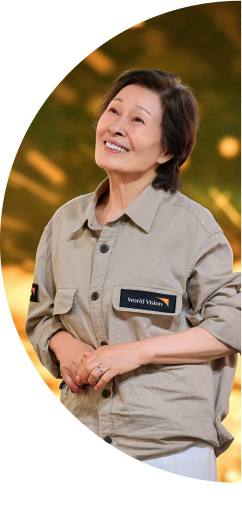

“가능할까? 달라질까?
도움이 될까?”
물음표에서 시작된 나눔
“가능할까? 달라질까? 도움이 될까?”
물음표에서 시작된 나눔
30여 년 전, 처음 아프리카를 향했던 배우 김혜자는 내전, 식량난, 질병에 시달리는 개발도상국 아이들의 참담한 상황을 지켜보고 두 번 다시 이런 일로
아프리카에 오지 않게 해달라고 기도했습니다. 또 이런 현실이 나 하나의 나눔으로 달라지는 것이 가능할까? 도움이 될까? 많은 물음표가 생겼죠. 하지만 도저히
나아질 것 같지 않은 현실을 외면할 수 없었기에 30여 년간 세계 곳곳의 아이들을 만나며 기꺼이 소외된 이들의 목소리가 되었습니다.
“진정한 후원은,
후원을 멈추는 것입니다”
물음표가 느낌표로 변화된 시간
“진정한 후원은, 후원을 멈추는 것입니다”
물음표가 느낌표로 변화된 시간
그렇게 한 사람의 실천과 행동으로 시작된 나눔이 이제는 61만 한국 후원자님들이 함께하게 되었고, 덕분에 30여 년간 38개의 마을이 자립할 수
있었습니다(2023.11.18 기준). 영양실조로 고통받던 아이가 건강해지고, 오염된 식수로 인해 질병의 위험에 처했던 아이들은 안심하고 깨끗한 물을 먹을 수
있게 되었습니다. 또 학교를 다니며 꿈을 키울 수 있게 되었습니다. 그렇게 마을 스스로 살아갈 수 있도록 놀라운 변화들이 일어났습니다.
‘후원을 멈추는 스탑링’이
만드는 놀라운 변화에
함께해 주세요
‘후원을 멈추는 스탑링’이 만드는
놀라운 변화에 함께해 주세요
월드비전은 진정한 후원의 의미를 ‘자립’에서 찾았습니다. 한 마을이 자립할 수 있도록 후원하고, 마을 스스로 자립할 수 있는 역량을 갖추었을 때 후원을
멈추고, 다음 마을로 향하는 것입니다. 지난 6월부터 월드비전은 ‘자립마을’ 캠페인을 시작했습니다.
*자립마을이란? 마을의 다양한 문제(의료, 교육, 영양, 위생 등)를 스스로 해결할 수 있는 능력을 갖춘 마을

월드비전 자립마을 캠페인에 동참해 주신 분들께는 마을을 향한 약속의 징표로 ‘후원을 멈추는 스탑링’을 드립니다. 마을 스스로 살아갈 수 있을 때 후원을 멈추고
다음 마을로 향하는 여정을 일시정지 버튼으로 형상화한 반지입니다. 마을을 변화시키고 자립의 힘을 키워주는 후원, 더 많은 마을이 자립할 수 있도록 힘을 더해
주세요.